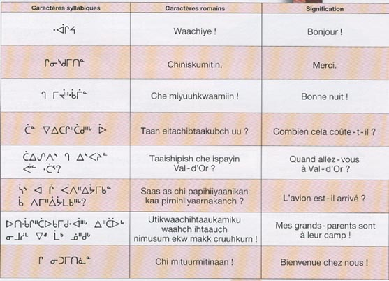

Des trésors linguistiques menacés de disparition

Le Canada abritait autrefois plus de 70 langues autochtones distinctes, réparties en 12 familles linguistiques différentes. Aujourd'hui, beaucoup sont en danger critique d'extinction. Ces langues ne sont pas de simples outils de communication : elles incarnent des mondes entiers de connaissance, de philosophie et de relation avec la nature.
Les langues autochtones du Canada se divisent en plusieurs grandes familles : les langues algonquiennes (Cree, Ojibwe, Micmac), les langues iroquoiennes (Mohawk, Cayuga, Oneida), les langues isolées comme le Tlingit, et les langues des peuples du Nord comme l'Inuktitut.
Chaque famille possède ses particularités. Le Cree, parlé par plus de 100 000 personnes, est une des langues autochtones les plus vitalisées au Canada. Il compte plusieurs dialectes et utilise le syllabaire cree, un système d'écriture développé au XIXe siècle par le missionnaire James Evans.
Les langues autochtones offrent des fenêtres sur des modes de pensée uniques. Beaucoup sont des langues "polysynthétiques", où un seul mot peut contenir ce qu'il faudrait toute une phrase pour exprimer en français. Elles contiennent souvent des distinctions grammaticales absentes des langues européennes, comme des formes verbales qui indiquent si l'information est directement observée, entendue ou transmise.
Le vocabulaire reflète également une profonde connaissance du territoire. Certaines langues possèdent des dizaines de mots pour décrire la neige, les états de la glace ou les phases de la lune, témoignant d'une observation millénaire de l'environnement.
À cause des politiques d'assimilation historiques, notamment les pensionnats autochtones où l'usage des langues maternelles était interdit et puni, des générations entières ont perdu leur langue. Aujourd'hui, l'UNESCO classe plus de 30 langues autochtones canadiennes comme "en danger critique".
Mais une renaissance est en cours. Des programmes d'immersion linguistique fleurissent dans plusieurs communautés. Des applications mobiles permettent d'apprendre le Mohawk ou le Cree. Des écoles maternelles en langue autochtone voient le jour. Les jeunes générations réclament leur héritage linguistique avec une détermination nouvelle.
La préservation de ces langues est vitale : quand une langue disparaît, c'est tout un mode de penser le monde, des connaissances écologiques uniques et une perspective sur l'histoire humaine qui s'évanouissent avec elle.
Article rédigé avec respect pour les traditions autochtones et la mémoire des ancêtres.